Last updated: 2020-10-10
Checks: 7 0
Knit directory: myTidyTuesday/
This reproducible R Markdown analysis was created with workflowr (version 1.6.2). The Checks tab describes the reproducibility checks that were applied when the results were created. The Past versions tab lists the development history.
Great! Since the R Markdown file has been committed to the Git repository, you know the exact version of the code that produced these results.
Great job! The global environment was empty. Objects defined in the global environment can affect the analysis in your R Markdown file in unknown ways. For reproduciblity it’s best to always run the code in an empty environment.
The command set.seed(20200907) was run prior to running the code in the R Markdown file. Setting a seed ensures that any results that rely on randomness, e.g. subsampling or permutations, are reproducible.
Great job! Recording the operating system, R version, and package versions is critical for reproducibility.
Nice! There were no cached chunks for this analysis, so you can be confident that you successfully produced the results during this run.
Great job! Using relative paths to the files within your workflowr project makes it easier to run your code on other machines.
Great! You are using Git for version control. Tracking code development and connecting the code version to the results is critical for reproducibility.
The results in this page were generated with repository version 467d8cf. See the Past versions tab to see a history of the changes made to the R Markdown and HTML files.
Note that you need to be careful to ensure that all relevant files for the analysis have been committed to Git prior to generating the results (you can use wflow_publish or wflow_git_commit). workflowr only checks the R Markdown file, but you know if there are other scripts or data files that it depends on. Below is the status of the Git repository when the results were generated:
Ignored files:
Ignored: .Rhistory
Ignored: .Rproj.user/
Untracked files:
Untracked: figure/
Note that any generated files, e.g. HTML, png, CSS, etc., are not included in this status report because it is ok for generated content to have uncommitted changes.
These are the previous versions of the repository in which changes were made to the R Markdown (analysis/BeerProduction.Rmd) and HTML (docs/BeerProduction.html) files. If you’ve configured a remote Git repository (see ?wflow_git_remote), click on the hyperlinks in the table below to view the files as they were in that past version.
| File | Version | Author | Date | Message |
|---|---|---|---|---|
| html | caff775 | opus1993 | 2020-09-08 | Build site. |
| Rmd | 0704459 | opus1993 | 2020-09-08 | wflow_publish(“analysis/BeerProduction.Rmd”) |
| html | 6abca25 | opus1993 | 2020-09-07 | Build site. |
| Rmd | a99d4a7 | opus1993 | 2020-09-07 | wflow_publish(“analysis/BeerProduction.Rmd”) |
library(tidyverse)
library(lubridate)
library(tidymetrics)
library(GGally)
library(gghighlight)
library(tidymodels)
theme_set(hrbrthemes::theme_ft_rc())brewing_materials <- readr::read_csv('https://raw.githubusercontent.com/rfordatascience/tidytuesday/master/data/2020/2020-03-31/brewing_materials.csv') %>%
mutate(date = ymd(paste0(year, "/", month, "/1")))
beer_taxed <- readr::read_csv('https://raw.githubusercontent.com/rfordatascience/tidytuesday/master/data/2020/2020-03-31/beer_taxed.csv')
brewer_size <- readr::read_csv('https://raw.githubusercontent.com/rfordatascience/tidytuesday/master/data/2020/2020-03-31/brewer_size.csv')
beer_states <- readr::read_csv('https://raw.githubusercontent.com/rfordatascience/tidytuesday/master/data/2020/2020-03-31/beer_states.csv')skimr::skim(beer_states)
# 19 year/states with missing barrels
skimr::skim(brewing_materials)
table(brewing_materials$type)
# opportunity to examine the proportional trends of Corn vresus Sugar/syrups use
skimr::skim(beer_taxed)
skimr::skim(brewer_size)
table(brewer_size$brewer_size)Total all barrels produced by state per year (regardless of type)
all_barrels <-
beer_states %>%
na.omit() %>%
filter(state != 'total') %>%
group_by(state, year) %>%
summarise(barrels = sum(barrels))The top 5 states with largest increase in barrels from 2008 to 2019
increase_states <-
all_barrels %>%
mutate(total_barrels = cumsum(barrels)) %>%
filter(year %in% c(2008, 2019)) %>%
mutate(pct_chg = (total_barrels - lag(total_barrels)) / lag(total_barrels)) %>%
ungroup() %>%
top_n(5, pct_chg) %>%
pull(state)
increase_states[1] "AL" "CT" "ND" "RI" "TN"#Lets get the state names
states <- tibble(state = state.abb, state_name = state.name)
beer_df <-
beer_states %>%
na.omit() %>%
filter(state != 'total') %>%
group_by(state, year) %>%
summarise(barrels = sum(barrels)) %>%
mutate(total_barrels = cumsum(barrels)) %>%
left_join(states, by = 'state')Lets have a look at the materials trends. What ingredients are used in beer production?
brewing_materials %>%
filter(!str_detect(material_type, "Total"),
!(month == 12 & year %in% 2014:2015)) %>% # remove the subtotals) %>%
filter(date == max(date)) %>%
mutate(type = fct_reorder(type, month_current)) %>%
ggplot(aes(type, month_current/1000000, fill = type)) +
geom_col()+
scale_y_continuous(breaks = scales::pretty_breaks()) +
coord_flip()+
theme(plot.title.position = "plot",
legend.position = "",
panel.grid.major.y = element_blank())+
labs(
x = '',
y = 'Million Pounds',
title = 'Ingredients in US Beer Production, in the month of December 2019',
subtitle = 'US Alcohol and Tobacco Tax and Trade Bureau',
caption = '@Jim_Gruman | #TidyTuesday'
)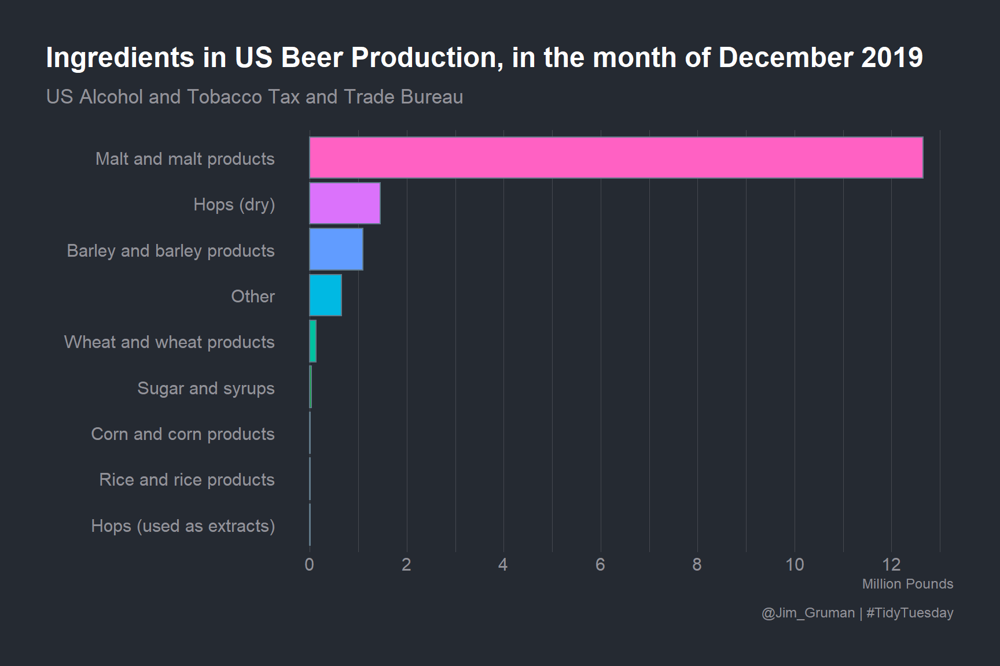
brewing_materials %>%
filter(!str_detect(type, "Total"), year < 2016,
!(month == 12 & year %in% 2014:2015)) %>% # remove the subtotals
ggplot(aes(date, month_current/1000000, color= type)) +
geom_line()+
labs(
x = '',
y = 'Million Pounds',
color = "Material",
title = 'Ingredients in US Beer Production, 2008-2016',
subtitle = 'US Alcohol and Tobacco Tax and Trade Bureau',
caption = '@Jim_Gruman | #TidyTuesday'
)+
theme(plot.title.position = "plot")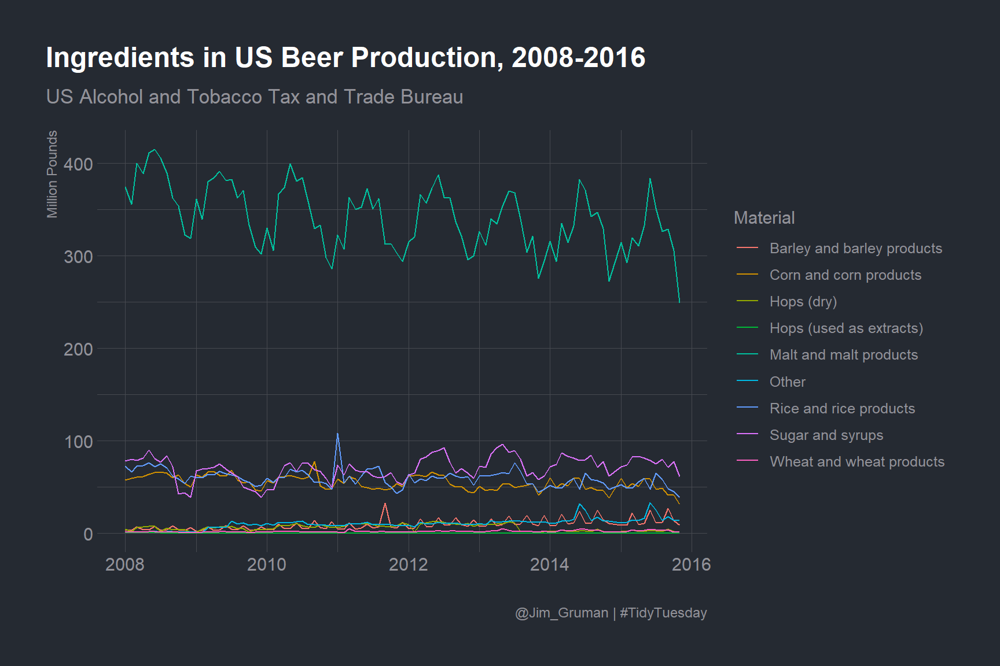
Tidymetrics
library(tidymetrics)
brewing_summarized <-brewing_materials %>%
rename(material = type) %>%
filter(!str_detect(material_type, "Total"), year < 2016,
!(month == 12 & year %in% 2014:2015)) %>%
tidymetrics::cross_by_dimensions(material_type, material) %>% # duplicates the data to summarize it
cross_by_periods(c("month","quarter","year")) %>%
summarize(total_pounds = sum(month_current)) %>%
ungroup()
brewing_summarized %>%
filter(material_type != "All", material != "All", period == "month") %>%
ggplot(aes(date, total_pounds/1000000, color = material))+
geom_line()+
labs(
x = 'Date',
y = 'Million Pounds',
color = "Material",
title = 'Ingredients in US Beer Production, 2008-2016',
subtitle = 'US Alcohol and Tobacco Tax and Trade Bureau',
caption = '@Jim_Gruman | #TidyTuesday'
)+
theme(plot.title.position = "plot")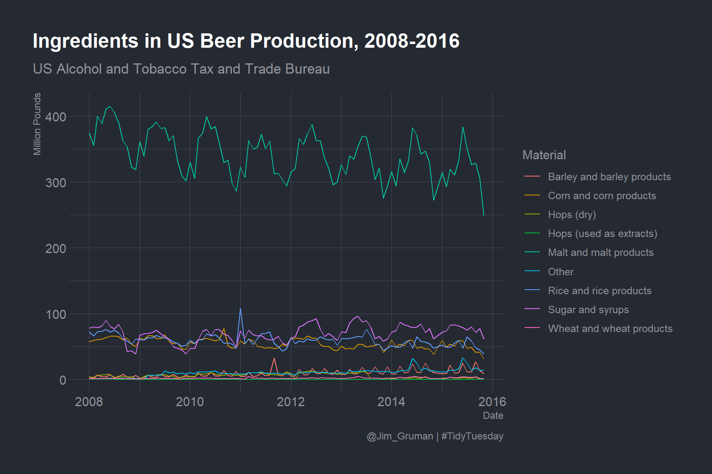
brewing_summarized %>%
filter(material_type != "All", material != "All", period == "quarter") %>%
ggplot(aes(date, total_pounds/1000000, color = material))+
geom_line()+
labs(
x = 'Date',
y = 'Million Pounds',
color = "Material",
title = 'Ingredients in US Beer Production, 2008-2016',
subtitle = 'US Alcohol and Tobacco Tax and Trade Bureau',
caption = '@Jim_Gruman | #TidyTuesday'
)+
theme(plot.title.position = "plot")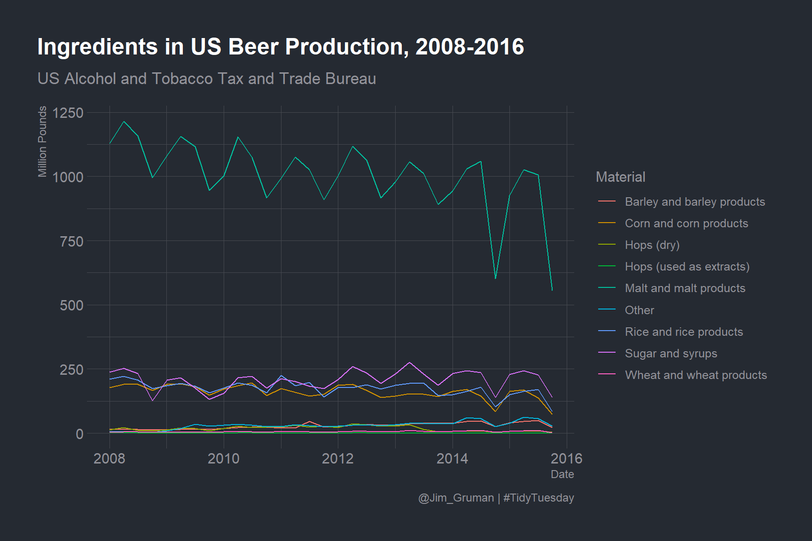
brewing_summarized %>%
filter(material_type != "All", material != "All", period == "year") %>%
ggplot(aes(date, total_pounds/1000000, color = material))+
geom_line()+
labs(
x = 'Date',
y = 'Million Pounds',
color = "Material",
title = 'Ingredients in US Beer Production, 2008-2016',
subtitle = 'US Alcohol and Tobacco Tax and Trade Bureau',
caption = '@Jim_Gruman | #TidyTuesday'
) +
theme(plot.title.position = "plot")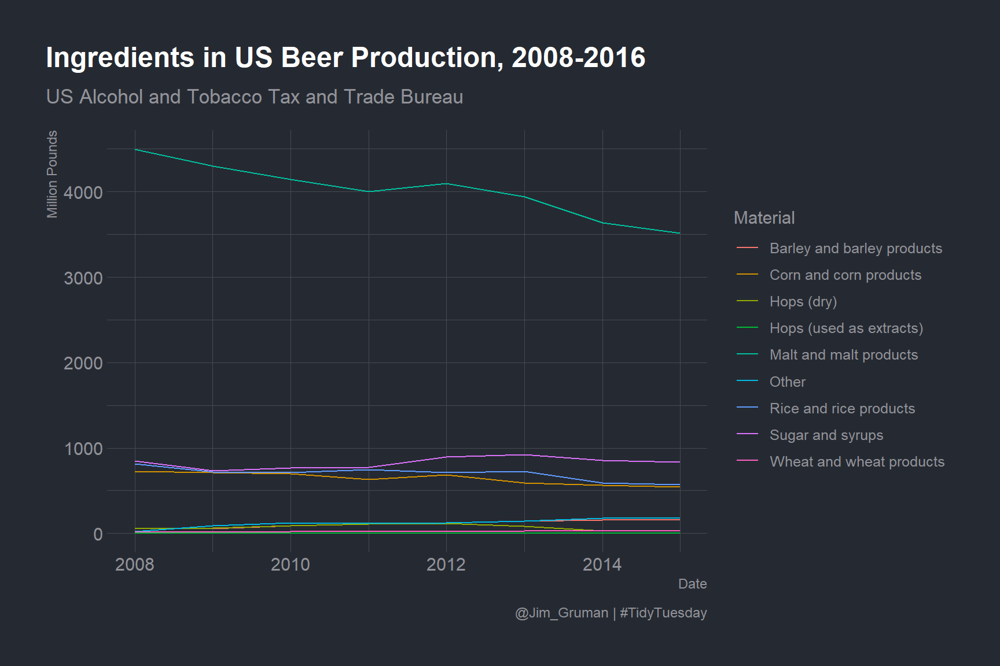
brewing_materials %>%
filter(material_type == "Total Used", year < 2016) %>%
mutate(month = factor(month, labels = month.abb)) %>%
ggplot(aes(x= month,y=month_current/1000000, group = factor(year), color = factor(year)))+
geom_line() +
expand_limits(y=0) +
labs(x = '',
y = 'Million Pounds',
color = "Year",
title = 'Ingredients in US Beer Production, 2008-2016',
subtitle = 'US Alcohol and Tobacco Tax and Trade Bureau',
caption = '@Jim_Gruman | #TidyTuesday') +
scale_y_continuous(labels = scales::comma_format()) +
theme(plot.title.position = "plot") 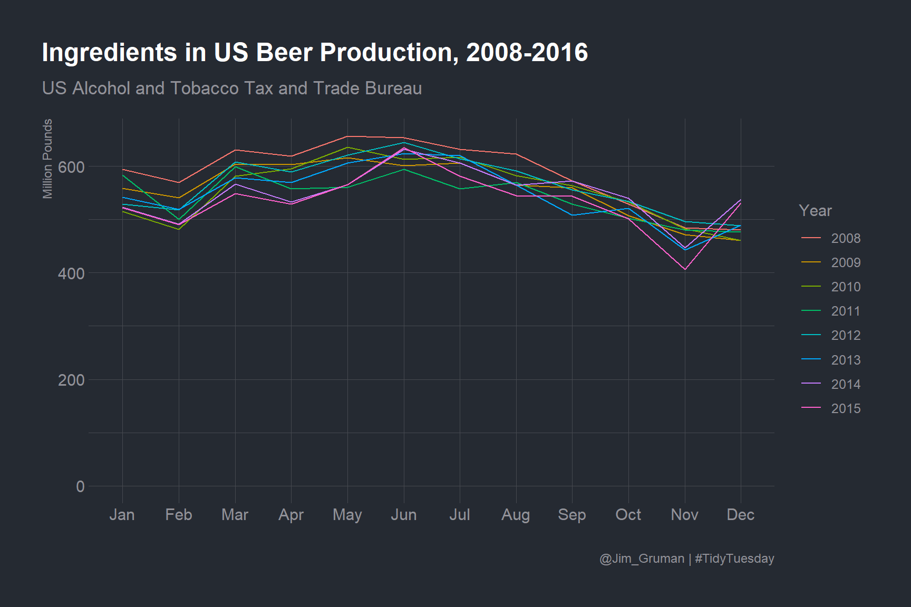
remotes::install_github("ramnathv/shinymetrics")
remotes::install_github("ramnathv/shinybones")
brewing_metrics<-create_metrics(brewing_summarized)
library(shinymetrics)
# interactive plotly visualization of grouped time multi-dimensional BI
preview_metric(brewing_metrics$production_NA_total_pounds)
# change the dropdown from "last year" to "all time" because 2019 is not in this datasetbrewer_size %>%
filter(brewer_size != "Total", !is.na(total_barrels))%>%
mutate(brewer_size = fct_lump(brewer_size, 5, w = total_barrels),
barrel_number = coalesce(parse_number(as.character(brewer_size)),1),
brewer_size = fct_reorder(brewer_size, barrel_number)) %>%
ggplot(aes(as_factor(year), total_barrels/1000000, fill = brewer_size))+
geom_col() +
scale_y_continuous(labels = scales::comma_format()) +
labs(x = 'Year',
y = 'Million Barrels',
fill = "Brewer Size",
title = 'Total Production, by US Brewer Size in 2019',
subtitle = 'US Alcohol and Tobacco Tax and Trade Bureau',
caption = '@Jim_Gruman | #TidyTuesday') +
theme(plot.title.position = "plot")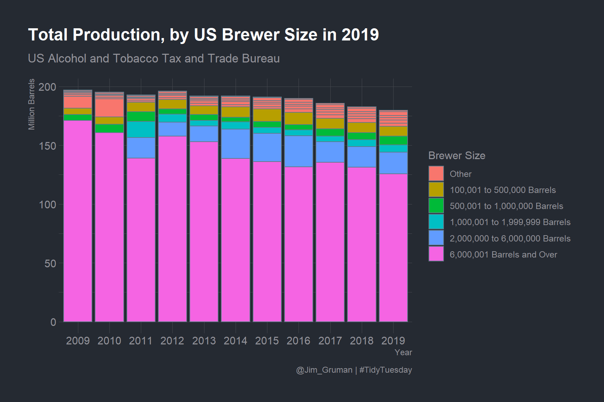
ggplot(beer_df, aes(year, barrels, group = state)) +
geom_line(aes(color = state), show.legend = F) +
gghighlight(
state %in% increase_states,
label_key = state_name,
label_params = list(size = 3, family = 'Arial Narrow',
fill = 'grey95', alpha = 0.9,
label.r = 0.1, segment.alpha = 0),
unhighlighted_params = list(color = 'grey88')
) +
labs(
x = 'Year',
y = 'Total number of barrels produced',
title = 'States with the Largest Increase in Beer Production, 2008-2019',
subtitle = 'US Alcohol and Tobacco Tax and Trade Bureau',
caption = '@Jim_Gruman | #TidyTuesday'
) +
scale_x_continuous(breaks = scales::pretty_breaks()) +
scale_y_log10(labels = scales::label_number()) +
theme(panel.grid = element_blank(),
panel.grid.major = element_blank(),
plot.title.position = "plot")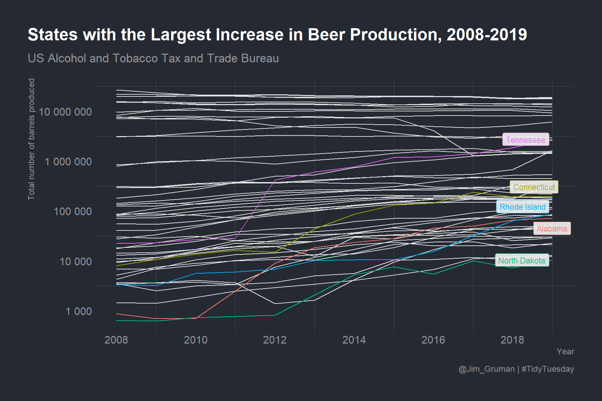
beer_states %>%
count(type, sort = TRUE, wt = barrels)# A tibble: 3 x 2
type n
<chr> <dbl>
1 Bottles and Cans 3790640995.
2 Kegs and Barrels 413060363.
3 On Premises 32942944.beer_states %>%
group_by(year) %>%
summarize(barrels = sum(barrels, na.rm = TRUE))# A tibble: 12 x 2
year barrels
<dbl> <dbl>
1 2008 369365660.
2 2009 366722996
3 2010 362423267.
4 2011 356149025.
5 2012 360802673.
6 2013 356172814.
7 2014 354773849.
8 2015 352082099.
9 2016 348860505.
10 2017 341358612.
11 2018 333778335.
12 2019 334154466.# Who consumes beer on premises?
beer_states %>%
filter(type == "On Premises", year == max(year), state != "total")%>%
arrange(desc(barrels))# A tibble: 51 x 4
state year barrels type
<chr> <dbl> <dbl> <chr>
1 CA 2019 399693. On Premises
2 NC 2019 222609. On Premises
3 TX 2019 196218. On Premises
4 FL 2019 182784. On Premises
5 CO 2019 175934. On Premises
6 VA 2019 163801. On Premises
7 NY 2019 150617. On Premises
8 WA 2019 144278. On Premises
9 OH 2019 132030. On Premises
10 MI 2019 131485. On Premises
# ... with 41 more rowsbeer_states %>%
filter( year == max(year), state != "total")%>%
group_by(state) %>%
mutate(percent = barrels / sum(barrels)) %>%
filter(type == "On Premises") %>%
arrange(desc(percent))# A tibble: 51 x 5
# Groups: state [51]
state year barrels type percent
<chr> <dbl> <dbl> <chr> <dbl>
1 ND 2019 10219. On Premises 0.982
2 OK 2019 21129. On Premises 0.925
3 SD 2019 9386. On Premises 0.722
4 WV 2019 8302. On Premises 0.673
5 AL 2019 47160. On Premises 0.659
6 SC 2019 53161. On Premises 0.625
7 IA 2019 61429. On Premises 0.560
8 MS 2019 11912. On Premises 0.555
9 DC 2019 16348. On Premises 0.547
10 AR 2019 16569. On Premises 0.542
# ... with 41 more rowsbeer_states %>%
filter( year == max(year), state != "total")%>%
group_by(state) %>%
mutate(percent = barrels / sum(barrels)) %>%
filter(type == "Bottles and Cans") %>%
arrange(desc(percent))# A tibble: 51 x 5
# Groups: state [51]
state year barrels type percent
<chr> <dbl> <dbl> <chr> <dbl>
1 TN 2019 2641268. Bottles and Cans 0.965
2 GA 2019 12855949. Bottles and Cans 0.959
3 MO 2019 11393002. Bottles and Cans 0.936
4 TX 2019 16934638. Bottles and Cans 0.931
5 NY 2019 7720585. Bottles and Cans 0.928
6 OH 2019 16176334. Bottles and Cans 0.915
7 CO 2019 17351292. Bottles and Cans 0.909
8 WI 2019 8353029. Bottles and Cans 0.905
9 VA 2019 12829544. Bottles and Cans 0.905
10 NH 2019 2276766. Bottles and Cans 0.877
# ... with 41 more rowsbeer_states %>%
filter( year == max(year), state != "total")%>%
group_by(state) %>%
mutate(percent = barrels / sum(barrels)) %>%
filter(type == "Kegs and Barrels") %>%
arrange(desc(percent))# A tibble: 51 x 5
# Groups: state [51]
state year barrels type percent
<chr> <dbl> <dbl> <chr> <dbl>
1 ME 2019 101033. Kegs and Barrels 0.457
2 HI 2019 35112. Kegs and Barrels 0.428
3 WY 2019 18726. Kegs and Barrels 0.409
4 WA 2019 208290. Kegs and Barrels 0.385
5 ID 2019 14403. Kegs and Barrels 0.328
6 WV 2019 4017. Kegs and Barrels 0.326
7 NM 2019 37838. Kegs and Barrels 0.317
8 MA 2019 143222. Kegs and Barrels 0.316
9 AK 2019 55454. Kegs and Barrels 0.307
10 IN 2019 49086. Kegs and Barrels 0.295
# ... with 41 more rowsstates_percents_2019 <-beer_states %>%
filter( year == max(year), state != "total")%>%
group_by(state) %>%
mutate(percent = barrels / sum(barrels)) %>%
ungroup()
states_percents_2019 %>%
filter(type == "On Premises") %>%
arrange(desc(percent))# A tibble: 51 x 5
state year barrels type percent
<chr> <dbl> <dbl> <chr> <dbl>
1 ND 2019 10219. On Premises 0.982
2 OK 2019 21129. On Premises 0.925
3 SD 2019 9386. On Premises 0.722
4 WV 2019 8302. On Premises 0.673
5 AL 2019 47160. On Premises 0.659
6 SC 2019 53161. On Premises 0.625
7 IA 2019 61429. On Premises 0.560
8 MS 2019 11912. On Premises 0.555
9 DC 2019 16348. On Premises 0.547
10 AR 2019 16569. On Premises 0.542
# ... with 41 more rowslibrary(maps)
library(sf)
states <- st_as_sf(map("state", plot = FALSE, fill = TRUE))
statesSimple feature collection with 49 features and 1 field
geometry type: MULTIPOLYGON
dimension: XY
bbox: xmin: -124.6813 ymin: 25.12993 xmax: -67.00742 ymax: 49.38323
geographic CRS: WGS 84
First 10 features:
ID geom
1 alabama MULTIPOLYGON (((-87.46201 3...
2 arizona MULTIPOLYGON (((-114.6374 3...
3 arkansas MULTIPOLYGON (((-94.05103 3...
4 california MULTIPOLYGON (((-120.006 42...
5 colorado MULTIPOLYGON (((-102.0552 4...
6 connecticut MULTIPOLYGON (((-73.49902 4...
7 delaware MULTIPOLYGON (((-75.80231 3...
8 district of columbia MULTIPOLYGON (((-77.13731 3...
9 florida MULTIPOLYGON (((-85.01548 3...
10 georgia MULTIPOLYGON (((-80.89018 3...states_percents_2019 %>%
mutate(ID = str_to_lower(state.name[match(state,state.abb)]))%>%
inner_join(states, by = "ID") %>%
ggplot()+
scale_fill_gradient2(low = "yellow", high = "blue", midpoint = 0.5,
labels = scales::percent)+
geom_sf(aes(geometry = geom, fill = percent)) +
facet_wrap(~ type, nrow = 2)+
ggthemes::theme_map()+
labs(title = "In Each State, What is the Highest Proportion of Beer Consumed?",
subtitle = 'US Alcohol and Tobacco Tax and Trade Bureau',
caption = '@Jim_Gruman | #TidyTuesday',
fill = "% Percent")+
theme(legend.position = c(0.7,0.1))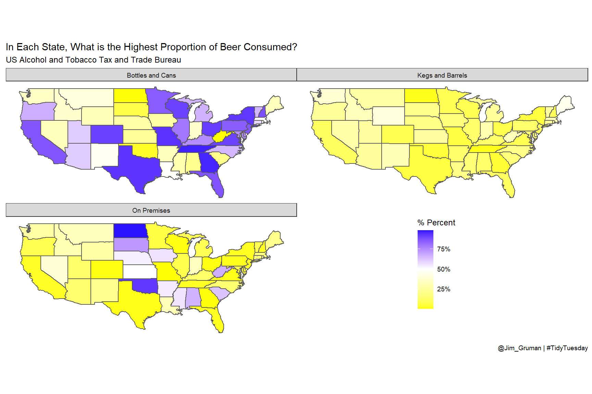
library(gganimate)
p<-beer_states %>%
filter(state != "total")%>%
group_by(state, year) %>%
mutate(percent = barrels / sum(barrels)) %>%
ungroup() %>%
mutate(ID = str_to_lower(state.name[match(state, state.abb)]))%>%
inner_join(states, by = "ID") %>%
ggplot(aes(geometry = geom, fill = percent))+
geom_sf() +
transition_time(year) +
facet_wrap(~ type, nrow = 2) +
scale_fill_gradient2(low = "yellow", high = "blue", midpoint = 0.5,
labels = scales::percent) +
ggthemes::theme_map() +
labs(title = "In Each State, What is the Highest Proportion of Beer Consumed? {as.integer(frame_time)}",
subtitle = 'US Alcohol and Tobacco Tax and Trade Bureau, 2008-2019',
caption = '@Jim_Gruman | #TidyTuesday',
fill = "% Percent")+
theme(legend.position = c(0.7,0.1))
anim<- animate(p, width = 900, height = 750, end_pause = 50, renderer = gifski_renderer())
anim_save(filename = "docs/assets/BeerStatesAnimated.gif", animation = anim)knitr::include_graphics("assets/BeerStatesAnimated.gif", error = FALSE)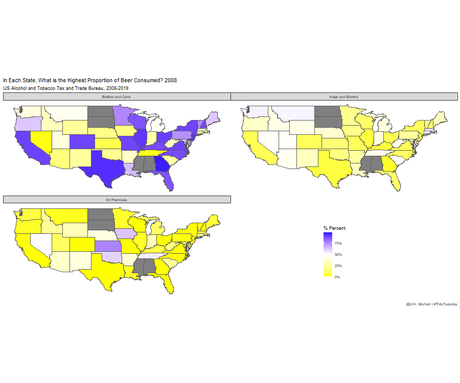
How much sugar do beer producers need per pound of malt?
brewing_materials %>% count(type, wt = month_current, sort = TRUE)# A tibble: 12 x 2
type n
<chr> <dbl>
1 Total Used 53559516695
2 Total Grain products 44734903124
3 Malt and malt products 32697313882
4 Total Non-Grain products 8824613571
5 Sugar and syrups 6653104081
6 Rice and rice products 5685742541
7 Corn and corn products 5207759409
8 Hops (dry) 1138840132
9 Other 998968470
10 Barley and barley products 941444745
11 Wheat and wheat products 202642547
12 Hops (used as extracts) 33700888brewing_filtered<-brewing_materials %>%
filter(!str_detect(type, "Total"), year < 2016,
!(month == 12 & year %in% 2014:2015))Explore the relationship between ingredients
brewing_df<-brewing_filtered %>%
select(date, type, month_current) %>%
pivot_wider(names_from = type,
values_from = month_current) %>%
janitor::clean_names()
# is there a remote correlation between
brewing_df %>%
ggplot(aes(malt_and_malt_products, sugar_and_syrups))+
geom_smooth(method = "lm")+
geom_point()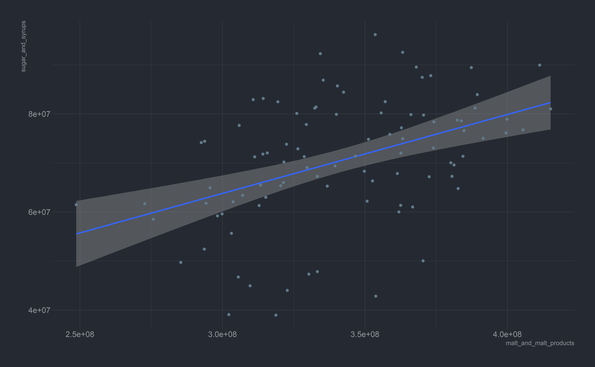
A simple linear model
# force the y-intercept to be zero (no beer, no malt, no sugar)
beer_fit<-lm(sugar_and_syrups ~ 0 + malt_and_malt_products, data = brewing_df)
summary(beer_fit)
Call:
lm(formula = sugar_and_syrups ~ 0 + malt_and_malt_products, data = brewing_df)
Residuals:
Min 1Q Median 3Q Max
-29985291 -6468052 174001 7364462 23462837
Coefficients:
Estimate Std. Error t value Pr(>|t|)
malt_and_malt_products 0.205804 0.003446 59.72 <2e-16 ***
---
Signif. codes: 0 '***' 0.001 '**' 0.01 '*' 0.05 '.' 0.1 ' ' 1
Residual standard error: 11480000 on 93 degrees of freedom
Multiple R-squared: 0.9746, Adjusted R-squared: 0.9743
F-statistic: 3567 on 1 and 93 DF, p-value: < 2.2e-16tidy(beer_fit)# A tibble: 1 x 5
term estimate std.error statistic p.value
<chr> <dbl> <dbl> <dbl> <dbl>
1 malt_and_malt_products 0.206 0.00345 59.7 5.72e-76to arrive at a confidence interval for a linear model
beer_boot<-bootstraps(data = brewing_df, times = 1e3, apparent = FALSE)beer_models<- beer_boot %>%
dplyr::mutate(model = purrr::map(splits, ~ lm(sugar_and_syrups ~ 0 + malt_and_malt_products,
data = . )),
coef_info = purrr::map(model, tidy))
beer_coefs<-beer_models %>%
unnest(coef_info)What is the distribution of the estimates for the model?
beer_coefs %>%
ggplot(aes(estimate))+
geom_histogram(alpha = 0.7)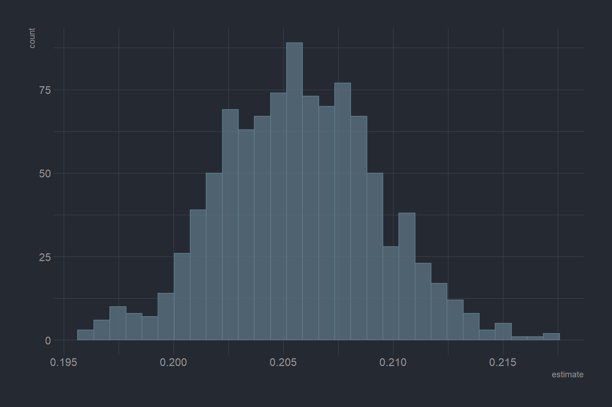
Our bootstrap confidence intervals:
int_pctl(beer_models, coef_info)# A tibble: 1 x 6
term .lower .estimate .upper .alpha .method
<chr> <dbl> <dbl> <dbl> <dbl> <chr>
1 malt_and_malt_products 0.199 0.206 0.213 0.05 percentilebeer_aug<-beer_models %>%
dplyr::mutate(augmented = purrr::map(model, augment)) %>%
unnest(augmented)
beer_aug %>%
ggplot(aes(malt_and_malt_products, sugar_and_syrups))+
geom_line(aes(y=.fitted, group = id), alpha = 0.1, color = "cyan3")+
geom_point()+
labs(title = "Bootstrap Resampling Model Estimates Confidence Interval")+
theme(plot.title.position = "plot")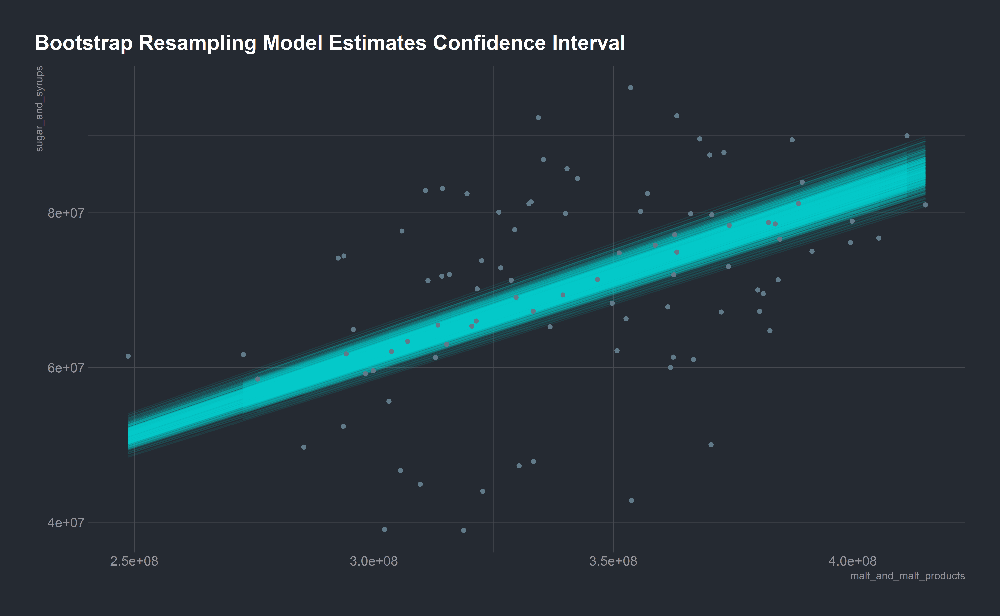
sessionInfo()R version 4.0.0 (2020-04-24)
Platform: x86_64-w64-mingw32/x64 (64-bit)
Running under: Windows 10 x64 (build 19041)
Matrix products: default
locale:
[1] LC_COLLATE=English_United States.1252
[2] LC_CTYPE=English_United States.1252
[3] LC_MONETARY=English_United States.1252
[4] LC_NUMERIC=C
[5] LC_TIME=English_United States.1252
attached base packages:
[1] stats graphics grDevices utils datasets methods base
other attached packages:
[1] gganimate_1.0.6 sf_0.9-6 maps_3.3.0 yardstick_0.0.7
[5] workflows_0.2.0 tune_0.1.1 rsample_0.0.8 recipes_0.1.13
[9] parsnip_0.1.3 modeldata_0.0.2 infer_0.5.3 dials_0.0.9
[13] scales_1.1.1 broom_0.7.1 tidymodels_0.1.1 gghighlight_0.3.0
[17] GGally_2.0.0 tidymetrics_0.0.1 lubridate_1.7.9 forcats_0.5.0
[21] stringr_1.4.0 dplyr_1.0.2 purrr_0.3.4 readr_1.4.0
[25] tidyr_1.1.2 tibble_3.0.3 ggplot2_3.3.2 tidyverse_1.3.0
[29] workflowr_1.6.2
loaded via a namespace (and not attached):
[1] readxl_1.3.1 backports_1.1.10 systemfonts_0.3.2
[4] plyr_1.8.6 splines_4.0.0 listenv_0.8.0
[7] digest_0.6.25 foreach_1.5.0 htmltools_0.5.0
[10] fansi_0.4.1 magrittr_1.5 globals_0.13.0
[13] modelr_0.1.8 gower_0.2.2 extrafont_0.17
[16] extrafontdb_1.0 lpSolve_5.6.15 prettyunits_1.1.1
[19] colorspace_1.4-1 blob_1.2.1 rvest_0.3.6
[22] ggrepel_0.8.2 haven_2.3.1 xfun_0.18
[25] crayon_1.3.4 jsonlite_1.7.1 survival_3.2-7
[28] iterators_1.0.12 glue_1.4.2 gtable_0.3.0
[31] ipred_0.9-9 Rttf2pt1_1.3.8 DBI_1.1.0
[34] ggthemes_4.2.0 Rcpp_1.0.5 progress_1.2.2
[37] units_0.6-7 GPfit_1.0-8 lava_1.6.8
[40] prodlim_2019.11.13 httr_1.4.2 RColorBrewer_1.1-2
[43] ellipsis_0.3.1 pkgconfig_2.0.3 reshape_0.8.8
[46] farver_2.0.3 nnet_7.3-14 transformr_0.1.3
[49] dbplyr_1.4.4 janitor_2.0.1 utf8_1.1.4
[52] tidyselect_1.1.0 labeling_0.3 rlang_0.4.7
[55] DiceDesign_1.8-1 later_1.1.0.1 munsell_0.5.0
[58] cellranger_1.1.0 tools_4.0.0 cli_2.0.2
[61] generics_0.0.2 gifski_0.8.6 evaluate_0.14
[64] yaml_2.2.1 knitr_1.30 fs_1.5.0
[67] nlme_3.1-149 future_1.19.1 whisker_0.4
[70] xml2_1.3.2 compiler_4.0.0 rstudioapi_0.11
[73] curl_4.3 e1071_1.7-3 reprex_0.3.0
[76] lhs_1.1.1 tweenr_1.0.1 stringi_1.5.3
[79] gdtools_0.2.2 hrbrthemes_0.8.0 lattice_0.20-41
[82] Matrix_1.2-18 classInt_0.4-3 vctrs_0.3.4
[85] pillar_1.4.6 lifecycle_0.2.0 furrr_0.1.0
[88] httpuv_1.5.4 R6_2.4.1 promises_1.1.1
[91] KernSmooth_2.23-17 codetools_0.2-16 MASS_7.3-53
[94] assertthat_0.2.1 rprojroot_1.3-2 withr_2.3.0
[97] mgcv_1.8-33 parallel_4.0.0 hms_0.5.3
[100] grid_4.0.0 rpart_4.1-15 timeDate_3043.102
[103] class_7.3-17 snakecase_0.11.0 rmarkdown_2.4
[106] git2r_0.27.1 pROC_1.16.2